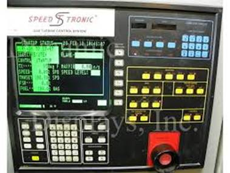
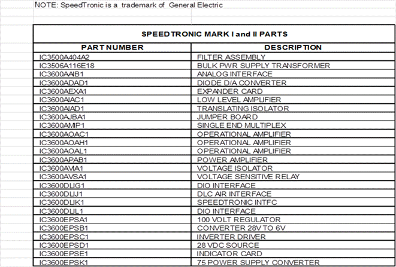
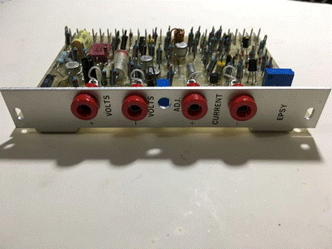
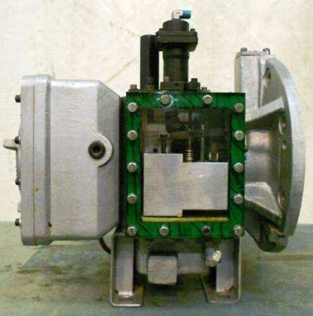

Your independent source of specialist Technical Advice and source of spares for Speedtronic and pre-Speedtronic control systems
We offer OEM alternative engineering services for the GE family of gas turbines.
We also specialise in earlier control systems i.e. The Fuel Regulator Gas Turbine Control System
If you are searching for any of the following, please contact us

General Electric gas turbine controls
Speedtronic control system for GE gas turbines
Speedtronic Mk I control system
Speedtronic Mk II and Mk II w ITS
Speedtronic Mk IV
Speedtronic Mk V
Fuel Regulator Control system
Energy Innovation Ltd. supply new and pre-owned Speedtronic Mk I and Mk II components including control cards
and full panels.

Commissioning, troubleshooting, retrofit, maintenance, modifications
Directomatic II card repair
Sourcing and re-location of used power generation equipment
Energy Engineering Services
Project Management Services
Look no further. You'll find it at Energy Innovation Ltd.
Energy Innovation Ltd. provide technical support including field services for control systems for power generation equipment, including the GE family of industrial and aeroderivative gas turbines.

We specialize in all model Speedtronic control systems including;Speedtronic Mk I
Speedtronic Mk II & Mk II w ITS,
Speedtronic Mk IV
Speedtronic Mk V
OEM and non-OEM retrofits of the above systems.
We also specialize in Pre-Speedtronic control Systems i.e. The Fuel Regulator Gas Turbine Control System.

We provide in-situ field calibration (Crank Checks and calibration) of the fuel regulator control system.
This is a time saving and cost effective means of calibrating the fuel regulator without removing it to a specialist workshop.
We provide consultancy services on retrofitting and life extension of all the above control systems.
At Energy Innovation Ltd., you'll discover an easy to use, information packed web site.
Note Speedtronic and Directomatic are trademarks of the General Electric Co. USA